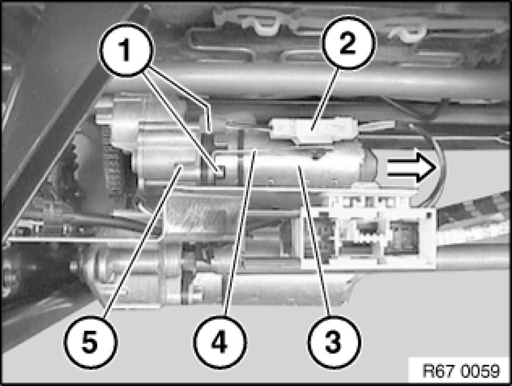
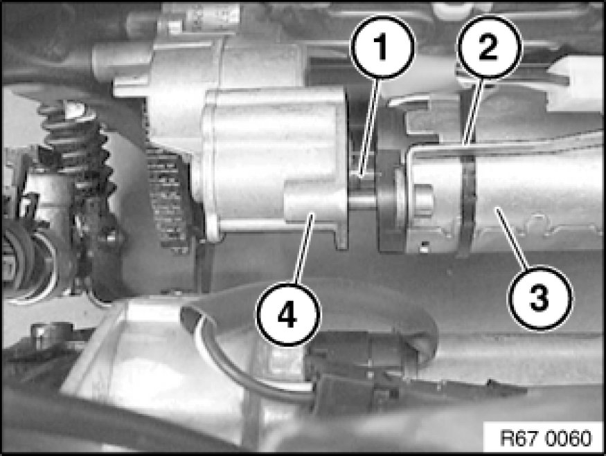

Removing and Installing/Replacing Drive for Seat Height Adjustment (Front Seat Removed)
67 31 521 - Removing and installing/replacing drive for seat height adjustment (front seat removed)

Disconnect plug connection (2).
Note:
Secure drive for seat height adjustment (3) against falling out.
Release screws (1).
Remove drive for seat height adjustment (3) with fixture for plug connection (4) in direction of arrow from flange (5).
If necessary, remove inner drive shaft from drive for seat height adjustment (3).

Installation:
Make sure drive shaft (1) is exactly seated.
Ensure fixture for plug connection (2) and drive for seat height adjustment (3) on flange (4) are correctly seated.